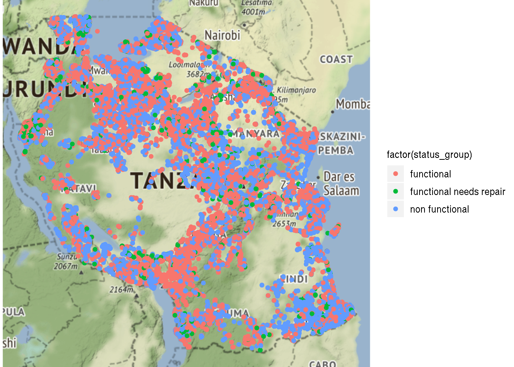
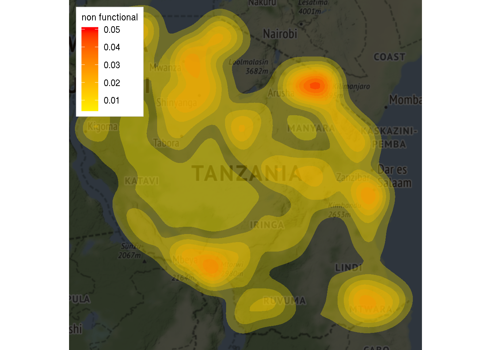

Building a Predictive Maintenance Model with R
Using data collected by TAARIFA, I will explore a possible model that will predict if a waterpoint requires maintenance.
Explore the Data
The dataset shows the funder, installer, location, water source and operational status of all water points in Tanzania. Since each point is geocoded, I want to see how theyre distributed across the country.
## Using zoom = 6...
## Source : http://tile.stamen.com/terrain/6/37/32.png
## Source : http://tile.stamen.com/terrain/6/38/32.png
## Source : http://tile.stamen.com/terrain/6/39/32.png
## Source : http://tile.stamen.com/terrain/6/37/33.png
## Source : http://tile.stamen.com/terrain/6/38/33.png
## Source : http://tile.stamen.com/terrain/6/39/33.png
## Source : http://tile.stamen.com/terrain/6/37/34.png
## Source : http://tile.stamen.com/terrain/6/38/34.png
## Source : http://tile.stamen.com/terrain/6/39/34.png It doesnt look like there are any obvious concentrations of broken waterpoints. A density map should help highlight the largest concentrations of broken waterpoints.
## Using zoom = 6...
Looking at the Features
With an idea of what the data looks like, I need to standardize it so it can be used for further analysis.
| Status Group | Percentage |
| functional | 0.5430808 |
| functional needs repair | 0.0726768 |
| non functional | 0.3842424 |
In this case - there are far more examples of functional devices. I will address this later on.
Split Data and Model Training
Next, I split the data into train and validate so I can create a model, tune it, then validate its performance.
n_train <- round(nrow(train_encoded_DF)*.7)
TRAIN_DF <- train_encoded_DF
TEST_DF <- test_encoded_DF
TRAIN_DF['status_group'] <- TRAIN_DF$status_group%>%factor()%>%as.numeric()
n_train <- sample(nrow(TRAIN_DF), .8*nrow(TRAIN_DF),replace=FALSE)
n_valid <- sample(nrow(TRAIN_DF), .2*nrow(TRAIN_DF),replace=FALSE)
train_data <- TRAIN_DF[n_train,]
valid_data <- TRAIN_DF[n_valid,]
train_labels <- as.numeric(train_data$status_group)-1
valid_labels <- as.numeric(valid_data$status_group)-1Training the model
I chose to use a method called gradient boosted trees since it performs well at combating class imbalance. This technique works by creating an ensemble of decision trees (considered weak learners). The ensemble is created iteratively, where each predictor added to the ensemble learns from the residual errors of the previous predictor. The final prediction is simply the sum of all predictions. The implementation I chose to use is the popular XGBOOST.
Evaluating Performance
The results of cross validation gives a measure of performance: precision, recall, and F-measure.
Precision gives an idea of the model’s accuracy. It is the ratio of correct predictions over total number of predictions. We can see that the under-represented class has poor accuracy compared to the other classes.
Recall is the rate of positive instances detected by the classifier.
F-measure is a composite score that combines both precision and recall.
## Confusion Matrix and Statistics
##
## Reference
## Prediction 1 2 3
## 1 6193 454 842
## 2 45 296 20
## 3 318 99 3613
##
## Overall Statistics
##
## Accuracy : 0.8503
## 95% CI : (0.8438, 0.8567)
## No Information Rate : 0.5519
## P-Value [Acc > NIR] : < 2.2e-16
##
## Kappa : 0.7134
## Mcnemar's Test P-Value : < 2.2e-16
##
## Statistics by Class:
##
## Class: 1 Class: 2 Class: 3
## Sensitivity 0.9446 0.34865 0.8074
## Specificity 0.7566 0.99411 0.9437
## Pos Pred Value 0.8269 0.81994 0.8965
## Neg Pred Value 0.9173 0.95199 0.8902
## Precision 0.8269 0.81994 0.8965
## Recall 0.9446 0.34865 0.8074
## F1 0.8819 0.48926 0.8496
## Prevalence 0.5519 0.07146 0.3767
## Detection Rate 0.5213 0.02492 0.3041
## Detection Prevalence 0.6304 0.03039 0.3392
## Balanced Accuracy 0.8506 0.67138 0.8755Accounting for rare cases
I know that there is an imbalance in the target class, so I will use a technique called SMOTE (Synthetic Minority Over Sampling Technique) to intentionally oversample the minority class so the classifer can make better predictions.
train_data <- SMOTE(status_group ~ ., train_data, perc.over = 100, perc.under=200)
valid_data <- SMOTE(status_group ~ ., valid_data, perc.over = 100, perc.under=200)
prop.table(table(train_data['status_group']))
##
## 1 2 3
## 0.2949179 0.5000000 0.2050821## Confusion Matrix and Statistics
##
## Reference
## Prediction 1 2 3
## 1 794 61 136
## 2 165 1613 86
## 3 67 24 450
##
## Overall Statistics
##
## Accuracy : 0.8413
## 95% CI : (0.8286, 0.8534)
## No Information Rate : 0.5
## P-Value [Acc > NIR] : < 2.2e-16
##
## Kappa : 0.738
## Mcnemar's Test P-Value : < 2.2e-16
##
## Statistics by Class:
##
## Class: 1 Class: 2 Class: 3
## Sensitivity 0.7739 0.9499 0.6696
## Specificity 0.9169 0.8522 0.9666
## Pos Pred Value 0.8012 0.8653 0.8318
## Neg Pred Value 0.9035 0.9445 0.9222
## Precision 0.8012 0.8653 0.8318
## Recall 0.7739 0.9499 0.6696
## F1 0.7873 0.9057 0.7420
## Prevalence 0.3021 0.5000 0.1979
## Detection Rate 0.2338 0.4750 0.1325
## Detection Prevalence 0.2918 0.5489 0.1593
## Balanced Accuracy 0.8454 0.9011 0.8181Using the SMOTE technique, I obtained a highly accurate model that has better F1 score across each class.